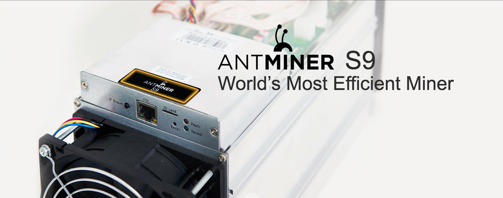

<?xml version="1.0" encoding="UTF-8"?><rss version="2.0"
	xmlns:content="http://purl.org/rss/1.0/modules/content/"
	xmlns:wfw="http://wellformedweb.org/CommentAPI/"
	xmlns:dc="http://purl.org/dc/elements/1.1/"
	xmlns:atom="http://www.w3.org/2005/Atom"
	xmlns:sy="http://purl.org/rss/1.0/modules/syndication/"
	xmlns:slash="http://purl.org/rss/1.0/modules/slash/"
	>

<channel>
	<title>s9 &#8211; Discount Miners</title>
	<atom:link href="https://discountminers.com/product-tag/s9/feed/" rel="self" type="application/rss+xml" />
	<link>https://discountminers.com</link>
	<description>Discount on the Antminer S9</description>
	<lastBuildDate>Sat, 23 Dec 2017 17:00:48 +0000</lastBuildDate>
	<language>en-US</language>
	<sy:updatePeriod>hourly</sy:updatePeriod>
	<sy:updateFrequency>1</sy:updateFrequency>
	
	<item>
		<title>Antminer S9 14TH/s Bitcoin Miner (February 21-28th Batch) FREE SHIPPING!</title>
		<link>https://discountminers.com/product/antminer-s9-14th-s-bitcoin-miner-bitcoin-miner-february-batch-free-shipping/</link>
		<comments>https://discountminers.com/product/antminer-s9-14th-s-bitcoin-miner-bitcoin-miner-february-batch-free-shipping/#respond</comments>
		<pubDate>Tue, 05 Dec 2017 20:20:56 +0000</pubDate>
		<dc:creator><![CDATA[dminers]]></dc:creator>
		
		<guid isPermaLink="false">https://discountminers.com/?post_type=product&#038;p=1350</guid>
		<description><![CDATA[<p>Antminer S9 - The world’s most efficient miner and world's first bitcoin mining ASIC based on the 16nm process node.</p>
<p>The post <a rel="nofollow" href="../../../product/antminer-s9-14th-s-bitcoin-miner-bitcoin-miner-february-batch-free-shipping/index.html">Antminer S9 14TH/s &lt;b&gt;Bitcoin Miner&lt;/b&gt; &lt;b/&gt;(February 21-28th Batch)&lt;/b&gt; FREE SHIPPING!</a> appeared first on <a rel="nofollow" href="../../../index.html">Discount Miners</a>.</p>
]]></description>
				<content:encoded><![CDATA[<p></p>
<p>&nbsp;</p>
<p><em>Power Supply Not Included</em></p>
<p>Antminer S9 &#8211; The world’s most efficient miner and world&#8217;s first bitcoin mining ASIC based on the 16nm process node.</p>
<p>The Antminer S9 follows the same form factor as that of the hugely popular Antminer S7 and is nearly the same size. Yet it has more than thrice the power and twice the efficiency of the S7. Each Antminer S9 employs 189 such chips to deliver more hashrate and efficiency than any bitcoin miner ever made.</p>
<p>The post <a rel="nofollow" href="../../../product/antminer-s9-14th-s-bitcoin-miner-bitcoin-miner-february-batch-free-shipping/index.html">Antminer S9 14TH/s &lt;b&gt;Bitcoin Miner&lt;/b&gt; &lt;b/&gt;(February 21-28th Batch)&lt;/b&gt; FREE SHIPPING!</a> appeared first on <a rel="nofollow" href="../../../index.html">Discount Miners</a>.</p>
]]></content:encoded>
			<wfw:commentRss>https://discountminers.com/product/antminer-s9-14th-s-bitcoin-miner-bitcoin-miner-february-batch-free-shipping/feed/</wfw:commentRss>
		<slash:comments>0</slash:comments>
		</item>
	</channel>
</rss>

<!-- Localized -->